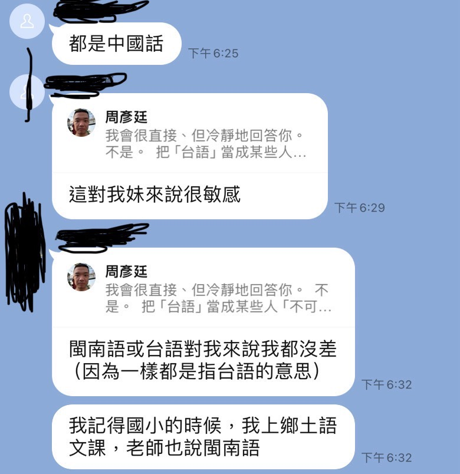

點擊上方的語言選單以切換語言
出門旅遊時，你是否曾因為父母拍的照片抓不到最佳角度，或是相機拍出來的自己不如鏡子裡熟悉的自己而煩惱一整天？有些人甚至會因此上網搜尋「鏡子裡的我 vs 相機裡的我哪個才是真實的我」，完全忽略旅行的樂趣。
更嚴重的例子，有人因為照片不上相被誤會，甚至遭到網路暴力，即便本人長相正常。這種情況讓我們不得不注意：現代媒介如何影響我們對自己的認知。
其實不只是人，連食物、錄影或聲音也會出現失真問題：
食物：手機拍攝容易壓縮立體感、改變光線、消失溫度與質感。例如剛出爐的米其林餐點，拍出來可能看起來像放涼的餿掉食物。
下方的插圖為失真的食物的照片影像（錄影）：光線、角度與鏡頭會影響膚質或臉型比例，靜態瞬間容易抓到奇怪表情，造成照片翻車。
聲音：錄音只捕捉空氣傳導，缺少骨傳導的厚實感與空間反射，手機錄音還會壓縮高低頻，使聲音單薄或尖刺，層次感消失。鋼琴家尤其能感受到，錄音常常失去動態對比與立體感。
下方一連串從油管插入的影片為本網頁的作者在家中彈鋼琴的影片，這些影片可以反映出手機錄音導致的聲音失真問題，尤其是鋼琴錄音的失真問題失真原理小整理：
很多人聽說「鏡子裡的你才是別人眼中的你」，這其實是心理安慰說法，並不完全正確。但如果仔細分析：
換句話說，鏡子比相機更接近別人眼中的你，但沒有單一版本是真正完整的「你」。
長期接觸扭曲的影像版本可能引發容貌焦慮症（body dysmorphic disorder），但問題核心通常不是「外貌不好」，而是「看到太多不準確的自己」。
真正嚴重的容貌焦慮症會每天花大量時間想外貌、反覆檢查或逃避鏡子/照片，甚至影響情緒、人際或生活品質。
一個真實案例是台灣色情片演員艾悠（暗黑iu）。她曾在 Dcard 上被網友批評「長這樣怎麼還能當色情片演員」，原因就是照片角度與光線扭曲了她的臉型，讓她看起來與本人差距很大。實際上，她本人長相漂亮，但網友看到的只是失真的影像，並據此下定論甚至網暴她。
下方一連串為艾悠因不上相而被網暴的截圖你是否也因為害怕照片不上相，而不敢與人合影，甚至像我一樣曾經瘋狂搜尋「相機裡的我真實嗎」？如果你正處於這種焦慮中，請看看這組令人心驚的網路對比截圖。
事件的主角是一位發表擇偶身高標準而引發爭議的網紅「琳賽阿姨」。在報導同樣事件的不同粉專中，僅僅因為媒體選圖的不同，她收到的評價簡直天差地別：
（圖：擷取自某粉專影片，光線較自然，五官比例相對穩定。）
對應評價： 網友反應相對理性，甚至有「長得不錯」、「尊重擇偶自由」等正面或中立的討論。
（圖：新聞選用的「翻車」照片。典型的廣角畸變加上瞬時表情崩壞。）
對應評價： 同樣一個人，因一張嚴重失真的照片，留言瞬間轉向惡毒的羞辱：「原始人」、「這麼醜」、「笑死」。
我想對你說的是：
如果連一個長相正常的網紅，都會因為一張「快門抓錯、鏡頭畸變」的照片而被數萬人無情羞辱，那你憑什麼要求自己每一張照片都必須完美無缺？
那些惡毒的評論，攻擊的從來不是「她本人」，而是那張「被扭曲的二維平面影像」。請記住：現場的你比照片好看很多，別讓那些不準確的像素，卡住你享受生活的心情。
理解媒介會失真很重要：照片或錄影不等於你真實的外貌。現場的你比照片好看很多，別人看到的是整體動態的你。
別被照片卡住心情，鏡子裡的你比相機裡的你更接近別人眼中的你，現場的你比照片好看很多，出門就專心玩吧！
把注意力放在旅遊體驗、互動與氣質，而不是單張照片或瞬間瑕疵，能有效降低容貌焦慮感。
請先給自己三秒鐘，啟動你的「媒體識讀」引擎，問問自己：
在沒搞清楚真相（見到本人動態、立體的樣貌）前，別輕易讓你的鍵盤成為殺人的武器。別對著幾萬個扭曲的「像素」咆哮，那樣只會顯得我們對物理常識的無知。
當你因為在照片中不上相而感到失落時，身邊的長輩可能會說出一些「看似為你好，實則極其傷人」的廢話：
會講出這種話的人，被封鎖一點都不意外。他們之所以能輕易叫你「放下」，是因為受損的不是他們在乎的東西。
換個角度想，如果換成是他們的信仰受損呢？
如果你是對耶和華虔誠的信徒，每週都會上教堂唱聖歌讚美祂，而有人對你說：
「耶穌復活只是神話故事，科學根本不支持。而且聖經裡的耶和華用大洪水毀滅世界、用火球和硫磺摧毀城市、降下瘟疫殺死一萬四千七百人、下令以色列人屠城、不准人類膜拜別的神，甚至沒理由也毫無徵兆地擊殺扶約櫃的人，這哪裡仁慈？根本是獨裁、殘暴，外加智力低下和精神分裂！」
如果你是某政黨的死忠支持者，而家人對你說：
「你是被洗腦得多嚴重？貪污證據就在眼前，你是眼瞎了嗎？」
或者你對國家認同有強烈堅持，要求別人尊重你的語言稱呼，對方卻滿不在乎地說：
「發源地跟腔調都差不多，到底哪裡不一樣？你有完沒完？」

當你遇到上述情況，你一定會想跟對方絕交吧？
很多人看到新聞報導法官宣告殺人犯「有教化可能」時，會憤怒地吐槽：「死的又不是你孩子！」或要廢死聯盟滾出台灣。
但事實上，我們在生活中也常在無意間扮演那位「判加害者可教化」的法官。當我們忽視他人的執著、否定他人的焦慮時，我們就是在行使那種廉價且傲慢的寬容。
因為痛的不是你，所以你才能展現出那種自以為是的「理智」。